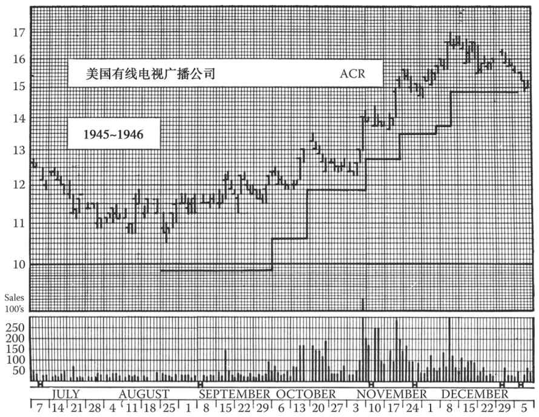
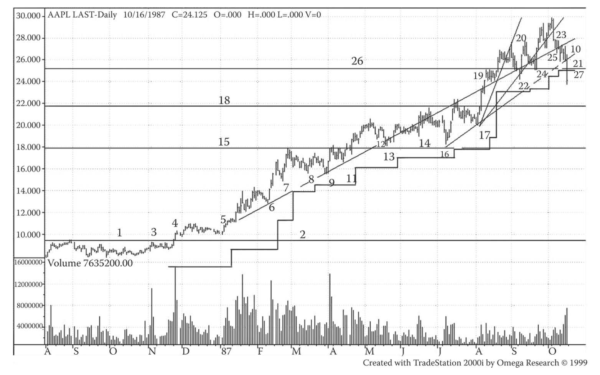
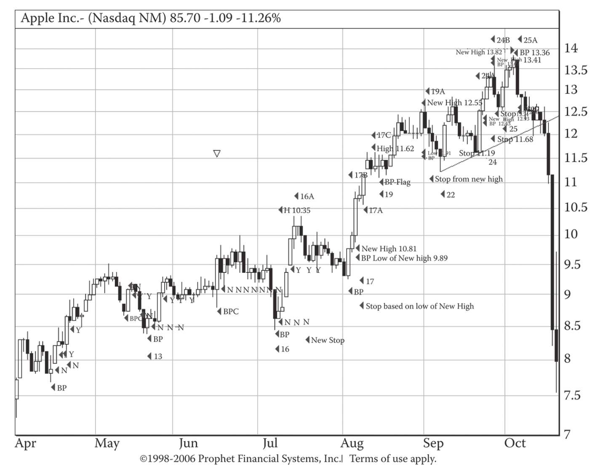
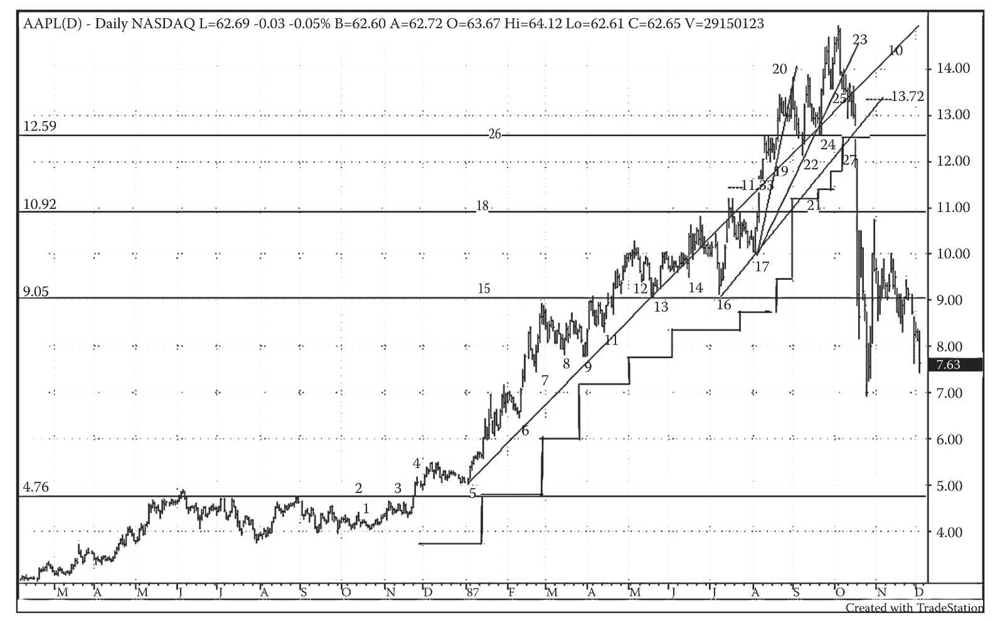

第28章 什么是底部和顶部
（第9版编者按：此章极为重要。在这部分内容中，我保留了迈吉“顶部和底部”的说法，但当下读者更常见的说法是“高点和低点”，可能这一说法更通俗易懂。对高点和低点的认识十分关键；同理，牛市中的新高和新低也值得关注。当形态出现重大突破时，交易者需关注可能的趋势变化。）
本章中，我们重点讨论短线顶部和底部的构成条件，并不讨论长线或中线的顶部或底部。原因在于，进行技术性操作时，短线顶部或底部能为我们提供重要的线索。止损位、趋势线、目标值、支撑位和阻力位均由短线顶部和底部决定。因此对于交易者，短线顶部和底部的作用至关重要。（具体参见图28-1～图28-4。）
短线顶部和底部通常十分明显、易于标记，但有时也很难分辨，我们可以通过一些标准和规则进行标记。
确定止损位的一条有效规律是，股价出现疑似底部低点后，持续“逃逸三天”，则可确认为一个底部。假设一只股票经过一段时间的反复最终出现一个低点24美元，当日高点为25美元，此时还不能确定底部位置，但如果连续三天该股票的卖价不低于25⅛美元，则可以确认底部。3个全天的整体价格区间必须高于出现低点当天的高点价格，方可确认底部。该法则被称作“三天法则”，也适用于下跌走势，即三个全天的整体价格区间必须低于出现高点当天的低点价格。
设定原始止损位的法则也适用于止损位的更改。通过“三天法则”确立新的底部后，止损位位于底部下方某一位置。（第27章中具体介绍了底部以下间隔的长度设置。）
多头保护性止损位只能上移。因此，除非出现除息或除权，已确立的止损位将不会下移；在除息或除权的情况下，止损位下移距离等于股息或权利的价值。同理，卖空的止损位只能下移。（在除息或除权的情况下，卖空止损位将下移，距离等于股息或权利的价值。）
在某些情况下，底部和顶部较难确定；比如，在二次走向中整固或修正的幅度不明显，在这种情形下（与之相反的情形是，股价出现明显的上升或下降，形状类似阶梯），需要人为的判断和经验来确定短线基准点的位置。
28.1 基准点
用于确定止损位的参照点位被称为基准点 （basis point）。在牛市中，基准点是每次短线回调的底部，当股价上升并出现“三天逃逸”现象时，便可确定止损的位置。牛市中的每一个短线顶部也可作为基准点。在熊市中，每次上涨的顶部和每个短线底部均可作为基准点，用于确定保护性止损位，方法与牛市基准点的确定方法相同。
当一只股票沿着长线趋势的方向前进了15%或以上，然后出现了一段调整（幅度至少是前一个基准点到长线趋势终点的40%），那么一旦股价再次沿长线趋势方向变动，这就可以看作一个基准点。但如果股价回调幅度不及40%，且在某一个价位上停留了一周或以上，那么当股价再次沿长线趋势方向变动，这也应该看作一个基准点（前提是有成交量的配合）。
每日的成交量就好比护士手上的体温计，能告诉我们股票究竟在发生怎样的变化，其作用甚至比股价本身更重要。在以下3种情况下，你可能会发现成交出现天量：①形态突破之日或股价出现显著变动之时，尤其是股价向上突破时；②股价在长线趋势或中线趋势中创新高或新低之日，即股价在牛市中突破前期顶部或在熊市中跌穿前期底部之时；③短线趋势结束或即将结束之时，即牛市中新的短线顶部和熊市中新的短线底部产生之时。当股价沿长线趋势的方向变动时，如果在上述之外的其他任何一天出现了成交天量，那么这很有可能预示着该段涨势/跌势的结束。

图28-1 这张图展示了多头保护性止损位的上移。美国有线电视广播公司股票的日线图在1945年夏天出现了一个圆底，即在1944年7月上涨结束后出现的长时间整固。9月12日出现一次成交放量式突破，随后的任何一次短线回调都是买入机会。
根据第27章中表27-1，第1个保护性止损位应设在8月21日的短线底部以下6%的位置，即9⅞美元处。在9月19、20日这两天，股价从9月17日的短线底部“逃逸”，9月28日是脱离短线底部的第3天，止损位因此上移至9月17日底部以下6%的位置，即10⅝美元处。下一次上移出现在10月11日收盘价创新高之后，该高点比10月1日短线峰值高出3%以上，止损位因此上移至11⅞美元处。11月2日的收盘新高比10月15日的短线峰值高出3%以上，止损位因此上移至12¾美元处。11月15日的收盘新高比11月7日的短线峰值高出3%以上，止损位因此上移至13½美元处。11月29日是股价从11月26日底部逃逸后的第3天，止损位因此上移至13¾美元处。12月5日的收盘价比11月17日的高点高出3%，止损位再次上移至14⅞美元处。最后，在1946年1月3日，股价触及该止损位。在熊市中，空头保护性止损位的下移也遵循同样的规律。（第9版编者按：对于该图和标题中存在的不符之处，本书后文将予以说明。）
现在，当短线顶部伴随着成交放量形成，股价达到新高时，我们可以预计股价将出现一段回调。一般来说，回调会持续几天或一周，有时还会更长。但回调偶尔也会以横盘的形式出现，持续一周或更长的时间，并且股价在这段时间不会明显下跌。如果回调展现出明显的跌势，那么股价通常会跌至前一个短线高点（支撑位）附近。同时，股价会继续跌至基本趋势线（连接两个或更多的前期短线底部而画出）、一个“平行通道”或一条连接两个或更多的前期短线顶部而画出的趋势线。如果回调以横盘形式出现，那么此段回调可能在股价到达上述趋势线时结束。
不管哪种情况，我们都要注意观察成交量的萎缩。如果在股价创新高后，成交量整体呈现出萎缩的趋势，且股价发生回调或不再上涨，那么我们就有充分理由判定这是一段短线调整期。如果股价随后继续上涨，且“连续逃逸三天”，那么我们就可以将回调的底部（穿过趋势线的那一点，不一定是横盘走势的最低点）作为新的基准点。
当股价看似开启一段新的走势时，比如突破了一段涨跌交替的走势后，有时很难确定底部在哪里。在实际突破发生之前，股价可能经历了几次成交量很小的波动。这种情况下，我们可以将成交放量视为突破信号，并立刻将该信号之前出现的低点确定为基准点。通常，在突破出现的三四天前，我们可以在成交量低迷的某个交易日找到该点。
我们已经介绍了在牛市中确定基准点的方法。熊市中的基准点与之具有相同的特点，唯一的区别在于股价向下突破时常常不伴随着成交放量。
现在，让我们考虑这样一个难题：假设股价持续上涨一段时间后出现了旗形的特征；我们在股价回调40%且成交量萎缩的情况下买入；随后股价继续下跌，未出现任何反弹，也没有任何清晰的成交量指标。这种情况虽然较为罕见，但也会偶尔出现。在这个例子中，我们应该寻找形成于前期跌势中且低于我们买入价的支撑位（整固形态、多重顶部等）。我们可以将这些支撑位视为基准点，而不是将止损位设置在回调的最低点。
在这种情况下，很多时候你会发现无法找到足够多的基准点。因此，除非下列情况出现，否则不要在股价持续逃逸后贸然操作回调趋势：①股价已远高于可以作为基准点的支撑位；或②股价在最近几年都高于前期所有价格。（反之亦然，在熊市中，如果想要卖空，那么要确定股价已跌穿一个强阻力区或在过去几个月内都维持在新的低位。）如果股价急涨之后似乎走出一个整固形态，并且你考虑在该形态内交易，那么一定要确保交易量在旗形或三角旗形回调中已经明显萎缩。
交易中线趋势时还有一点需要注意。一个趋势内的一系列波动常常会展现出某种规律。这一系列波动可能会形成一段经典的趋势线，每次回调幅度在40%～50%，并且止步于前期短线顶部。回调时成交量萎缩，而新顶部形成时成交放量。投资者很容易就会被这种“阶梯形上涨”的现象吸引而买入股票，希望涨势会延续。但趋势总有结束的一天。每一个短线顶部都有可能是最后的顶部。基准点的重要性在于确保你能在股价跌至基准点时及时清仓，或至少能在保护性止损指令被触发时逃出。成交量有助于我们判断何时应该停止某个趋势的交易。虽然一般来说顶部是伴随着成交放量形成的，但如果某个顶部的成交量明显大于前期任何短线顶部（在熊市中则是任何短线底部），那么你应该多加小心。一段趋势的最后一两次冲顶回落常常伴随着比前期任何一次冲顶回落更大的成交量。当你看到成交放出天量时，应做好出现大幅回调的准备，随后的回调可能会抵消中线趋势内一系列小幅上涨的成果。几周或几个月后，你会发现股价已回调了整个中线涨势的40%，并且交投清淡。这时，你应该密切观察新的交易机会，为新的长线趋势做好准备。
（第9版编者按：很多读者都忽视了本章的重要性。事实上，本章介绍的是进行趋势交易的基本概念。我在本章增加了一些对我本人和我的学生都非常重要的交易知识。）
28.2 基准点：案例分析
你对图28-1研究得越久，就越会觉得它包含了对趋势和市场的深刻理解。你看到股价一波又一波，起起伏伏。只要交易者或投资者不被调整浪震荡出局，那么在正常情况下，他会追随趋势直到其结束。但是，自营交易商（locals）、对冲基金以及利用股价波动获利者知道，前期的低点正是投资者和交易者设置止损位的水平。因此在正常的交易活动中，如果他们发现有机会将股价打压到重要低点，他们就会那样做。结果是，股价的低点有时会异常得低。
《金融怪杰》的作者杰克·施瓦格曾问布鲁斯·柯夫纳将止损位设在何处。柯夫纳回答：“股价不容易到达的地方。”基准点已包含一段审慎计算的止损距离，确实是股价不容易到达的地方，除非市场走向已真正反转。实际上，长期移动平均线不就是一条滞后的、包含止损距离的止损线吗？
此外，基准点不就是高点和低点的记号吗？高点和低点逐步抬升的，就是牛市；当高点和低点转为逐步降低时，就意味着趋势正在或已经改变。这是道氏理论的原理，也是短线交易的原则。并且，在高点和低点逐步降低的情况下，趋势线必然被击穿。
对于图28-1，马克·吐温有过中肯的评论。他说，任何尝试理解这张图的人都会发疯，而任何想要用这张图来预测股价的人都会亏钱。图28-1包含了自本书最早几版以来一些无法解释的谜团与矛盾。现在请看图28-2，我将这张图中体现出来的规则归纳如下。
·股价形成一个高点，暂时没有更高的成交价。
·股价回落，形成一个相对低点。寻找这个低点的方法是在前期高点出现之后每天观察，直到不再出现更低的价格。随着股价开始回升，如果有一个交易日股价始终处于备选低点日的成交区间之外，我们就标出这个交易日。
·当观察到3个这样的交易日，随后股价回落形成一个新的相对低点时，我们就将备选日的最低价位标记为基准点，并将我们的止损位提高至基准点日低点以下6%（或x%）处（见第27章）。
·如果一个新高点比前期高点高出3%以上，那么就将这个新高日的最低价位标记为新的基准点。
28.3 基准点范式
上述分析方法并非适用于每一只股票。但是，这种方法具有很强的范式性，因此值得深入研究。和其他所有经典技术分析法一样，这个方法使用时必须很小心，且必须伴以缜密的判断。这个方法有时在一些股票上非常好用，有时却显得毫无用处。但即便是那些很难用这个方法直接分析的股票，这个方法的基本原则也适用。图28-2就反映了这一点。在这张图上，细心的读者会发现，设置止损位时仅仅使用了股价走势的底部或低点，而不像图28-1那样随着新高点的出现而提升止损位。图28-2提供了一个简单的例子，以便普通投资者学习。水平更高的交易者可学习图28-1中跟随新高设置止损位的技巧。
实际上，图28-2完美地展示了基准点法的应用过程，即对于一段牛市从建仓到出货的完整分析过程，并且标出了该过程中的若干重要时点。因此，对基准点的观察、对止损位的设置、对潜在假反转的追踪都在这张图上标记出来了，这些标记还各有编号。这张标号图最初由金门大学用于教学。近年来越发明显的是，按这种方法在图上做标记，对于交易非常有用。所以我们建议读者，用这种方法来使图表分析更高效。

图28-2 苹果电脑公司在1987年牛市中的走势图。这张图近乎完美地展示了，在一段合理、正常的牛市中，怎样依据基准点来交易股票。这里仅呈现了波段低位的基准点
28.3.1 图28-2中的标号
1.一个圆底，也可能是连续圆底。
2.阻力线或突破线。
3.成交放量，引起关注。
4.大幅上攻，成交放量。突破阻力线2，明确的买入信号。
5.第1个基准点。请注意成交量在股价整固时缩小，然后在股价上攻时放大。在此基准点前，根据之前形态的低点，设置一个止损位。
6.基准点。
7.较弱的基准点（因为回撤幅度不大）。
8.基准点。
9.测试8处的基准点。
10.在点9之后画一条趋势线。
11.基准点。
12.备选基准点，未能满足“三天法则”。
13.基准点。
14.潜在基准点，但不是很可靠，因为自点13以来尚未出现新高点。
15.支撑/阻力线。
16.对基准点16进行测试。
17.基准点。
18.支撑/阻力线。
19.旗形，变成基准点。
20.趋势线，但因过于陡峭而难以维持。
21.趋势线。
22.基准点。
23.趋势线。
24.基准点。
25.基准点。
26.水平趋势线。
27.基准点在26.75美元（止损位为25.41美元）。在25.41美元处止损离场。
28.3.2 对图中事件的记叙
1～3.如果我们原本不关注该股票的话，那么3处的事件应该引起我们的注意。成交量显著放大，使我们开始注意该股票，发现其正在构筑圆底或连续圆底形态。
4.在4处，我们看到该股票放量大幅上涨，突破2处的水平线，这是明确的买入信号。我们买入后，将止损位设置在最近低点以下6%处。买入强势股后，很可能出现投资者获利回吐或自营交易商震仓吸筹的现象。
5.我们密切关注第一次回调。我们将每一天作为备选基准点来观察。5处被确认为基准点后，我们开始计算“脱离”基准点的天数，也就是在股价形成更低的低点之前，当天股价完全处于备选日成交区间以外的天数。当5处的基准点得到确认后，我们将止损位提升到5处以下6%处。
6.股价在5处之后创出新高，随后回调至6处，6处成为另一个基准点。因此我们将止损位提升到6处以下6%处。
7.股价继续攀升，另一个基准点出现在7处。程序很清楚：找到一个基准点，然后在其下方隔开一段审慎的距离设置止损位。一旦确认了一个止损位，就相应地提升止损位。密切关注股价的回调。股价回调时，你既可能找到一个更高的新基准点，也可能止损立场。
8～10.我们在9处找到一个新基准点，相应地提升止损位，在10处画出一条趋势线。9处的低点低于8处，但我们的5%止损距离使得我们的仓位完好无缺。我们并不将9处作为新的基准点，因此不降低止损位。“止损位只升不降”是不可违背的法则之一。止损距离很重要，因为交易者会震仓吸筹，从而加大股价的波动性。这一现象被称作羊群效应。
11.在11处，我们找到一个较弱的新基准点。股价创新高，但成交量较小。
12.在12处，我们有一个备选基准点，未能满足“三天法则”。
13.在13处，我们找到一个可靠的基准点，相应地提升止损位。
14.在14处，我们遇到一种“边缘”情况。此处可能成为基准点，但股价自13处以来并未创出新高。
15.在15处，我们可以画一条线来明确阻力位，这条阻力线未来将变成支撑线。
16.在16处，我们找到一个新的基准点，该点足以试探14处的点。
17～21.在17处，我们找到一个新基准点；在18处，我们能画出一条阻力线。股价突破这条线，既让人满意，也是一个警告。因为此时股价走势形成了一个旗杆，旗面在19处飘扬。旗面和旗杆都意味着市场已经很热，需要密切关注。旗面可以作为基准点，因此我们相应地提升止损位，并且知道涨势可能正在接近终点。20处的趋势线非常陡峭，进一步确认涨势可能正在接近终点。但是，我们在16和17处看到两个可靠的趋势线锚定点，依据它们画出趋势线21，它比先前画的那条更理想。
22～23.一次像样的回调最终出现在22处，产生了一个可靠的基准点和提升止损位的有力理由。请注意，22和24这两个点落于我们在10处画的趋势线上。
24.随着节奏的加快和股价的波动，24处形成了又一个有效基准点。
25～26.就连25处也是一个有效基准点，我们现在能清楚地看到26处的支撑线。
27.该股票在27处放量跌穿支撑/阻力线，随后跌到我们在25处设置的基准点止损位，此时显然应立即止损离场。有关基准点的概念在《阶梯止损法》一书中有详尽的探讨。该书可通过迈吉的技术分析网站http://www.edwards-magee.com 购买，也可通过亚马逊网站购买纸质或Kindle版本。
28.4 完整的基准点设置流程：在波峰和波谷均要设置基准点
正如之前迈吉所述，基准点的设置要同时考虑波峰和波谷。通过“三天法则”，我们可以找出波谷基准点；通过标记波峰和后续的新高，我们也可以找出新高基准点。当价格超过原有或最近波峰的3%，则无论是否出现过干预性波谷，都可以在新高日的低点设定新的基准点。如果之后出现另一新高，那么基准点需要重新调整，这里对原有流程稍做变通，我称它为“流程变体2”。
一方面，根据新高上移止损线会很容易因价格下探而被迫出仓，之后你便只能眼睁睁看着股价一路走强并创出新高，心里愤愤不平。（如果此刻你的情绪极度沮丧，那说明你对市场的态度过于感性。如果有一天你能以相对平衡的心态看待糟糕的市场，并能理性地观察和处理类似事件，则说明你已成长为一名成熟的投资者。）
另一方面，在积累了大量账面利润后，如果市况突然恶化，令你辛苦赚得的成果损失了1/3（甚至更多，如果你只一味地根据新高上移止损线！），那么请记住，道氏理论（以及追随趋势）的问题在于，你可能会放弃价格变动的前1/3和后1/3，有时却发现中间的1/3并不存在。
在运用“流程变体2”时，通常会有以下情况发生：当出现冲顶回落或逃逸时，该流程的策略会从逢低抛出转为逢高抛出。我通常认为战术的变通更为靠谱。改变战术固然有其陷阱，但整体流程还是值得肯定的。懂得战术使用的时机需要经验的积累和清醒的头脑，特别是在投资者承受巨大压力的情况下。
如果充分实施“流程变体2”并结合运用分批建仓/分批出货计划，则必定会有收获。
以马克·安东尼（Marc Antony）为代表的冷静派通常只遵循保守的波谷法（“流程变体1”），这一方法适用于长线投资。“流程变体1”比较简单，能适应高波动性的市场。在此类市场中，有的投资者试图躲避意料中的大幅下跌，但随后股价可能意外上行。
除非特别幸运，否则，做与不做，都有利弊。
28.4.1 完整的基准点设置流程
（1）新的波段高点形成，这是根据短时间内没有更高的股价出现来确认的。如果该高点比前一个波段高点（或前一段逃逸上涨/冲顶回落的最后一个高点）高3%（迈吉建议的数字，可以作为我们的参数），那么我们就应该将新高点出现那天的最低价设置为基准点。
（2）股价回落，低点出现。我们可以观察波段高点出现后每天的股价变化，如果后续股价都高于该低点，即可确定其为潜在的波段低点或备选基准点。当股价再次上攻时，我们应记录股价持续高于备选低点日的交易日，或“脱离1天”。
（3）如果新低点形成前，出现了3个上述交易日（“三天法则”），我们就可以将备选日标记为基准点日，并将止损位设在基准点日最低价以下6%的位置（根据参数不同，也可以是x%处）。很明显，新的止损位是在“三天法则”得到满足后的第2天确定的。
（4）如果在新的波段高点形成之前，未出现可以视为基准点的波段低点，那么我们就以新的高点为基础重复上述过程。
（5）如果新高点比前期高点高3%（或x%），那么我们可以将新高点出现当天的最低价视为新的基准点。因此，如果股价在几天内的走势是10美元、10.3美元、10.61美元和10.93美元，那么每一天的最低价都是一个基准点。

图28-3 本图与图28-2记录的是苹果公司在同一个时间段的股价走势，但本图以K线图的形式展现了基准点的设置流程。图中的基准点是由一波波的低点和不断走高的高点组成的。在这段冲顶回落的过程中，“新高法则”出现。显而易见的是，新高法则往往出现在趋势后期，股价逃逸上涨和冲顶回落的过程中
28.4.2 两张图：完整的止损设置流程（变体2）长线观点
迈吉还推荐了一种可用于冲顶回落过程的交易方法。这种方法叫跟进性止损。本书第9版对该方法进行了介绍。严格说来，虽然使用新高原则来计算止损位有一些战术的变体，但该原则仍是杀涨的一种演变。完全的杀涨策略应该是在冲顶日、关键反转日、单日反转时甚至急涨日抛售离场。该策略可能在跌势中更好理解。恐慌抛售日（股价往往会低收）可能会在收盘时出现离场高峰。

图28-4 本图以苹果公司的股价走势展现了基准点设置流程的变体2。本图和图28-2一样，完整记录了牛市的过程，但新增了几条虚线来展示按照“新高法则”计算出的止损点位置。上一张K线图（见图28-3）是用来近距离分析止损流程。本图则以更宏观的角度观察了变体2方法下止损位的相对位置
28.4.3 运用波段低点和新高点透彻分析案例
这个案例对读者来说已不陌生，它可充分体现整个过程中的差异。现在我们利用同样的资料来加以说明，差异用粗体字表示。
1.一个圆底，也可能是连续圆底。
2.阻力线或突破线。
3.成交放量，引起关注。
4.大幅上攻，成交放量。突破阻力线2，明确的买入信号。
5.第1个基准点。请注意成交量在股价整固时缩小，然后在股价上攻时放大。
6.基准点。
7.较弱的基准点（因为回撤幅度不大）。
8.基准点。
9.测试8处的基准点。
10.在点9之后画一条趋势线。
11.基准点。
12.备选基准点，未能满足“三天法则”。
13.基准点。
14.潜在基准点，但不是很可靠，因为自点13以来尚未出现新高点。
15.支撑/阻力线。
16.基准点。
16A.新高点：10.35美元 。
17.基准点。
17A.新高点10.81美元；低基准点9.89美元（+3%11.13美元）；止损位9.30美元 。
17B.新高点11.16美元；低基准点10.58美元（+3%11.49美元）；止损位10.49美元 。
17C.新高点11.62美元；低基准点11.22美元（+3%11.96美元）；止损位10.55美元 。
18.支撑/阻力线。
19.旗形，变成基准点。高点11.62美元。
19A.新高点12.55美元；低基准点11.91美元（+3%12.93美元）；止损位11.19美元 。
20.趋势线，但因过于陡峭而难以维持。
21.趋势线。
22.基准点。
23.趋势线。
24.基准点。
24A.新高点12.93美元；低基准点12.43美元（+3%13.34美元）；止损位11.68美元 。
24B.新高点13.41美元；低基准点13.07美元（+3%13.81美元）；止损位12.29美元 。
25.基准点。
25A.新高点13.82美元；低基准点13.36美元（+3%14.23美元）；止损位12.56美元 。
25B.在12.56美元处止损离场 。
26.水平趋势线。
27.基准点在25美元（止损位为11.80美元）。在11.80美元处止损离场。
28.5 对图中事件的记叙
1～3.如果我们原本不关注该股票的话，那么3处的事件应该引起我们的注意。成交量显著放大，引起我们对于该股票的关注，发现其正在构筑圆底或连续圆底形态。
4.在4处，我们看到该股票放量大幅上涨，突破2处的水平线，这是明确的买入信号。我们买入后，将止损位设置在最近低点以下6%处。买入强势股后，很有可能出现投资者获利回吐或自营交易商震仓吸筹的现象。
5.我们密切关注第一次回调。我们将每一天作为备选基准点来观察。5处被确认为基准点后，我们开始计算“脱离”基准点的天数，也就是在股价形成更低的低点之前，当天股价完全处于备选日成交区间以外的天数。当5处的基准点得到确认后，我们将止损位提升到5处以下6%处。
6.股价在5处之后创出新高，随后回调至6处，6处成为另一个基准点。因此我们将止损位提升到6处以下6%处。
7.股价继续攀升，另一个基准点出现在7处。程序很清楚：找到一个基准点，然后在其下方隔开一段审慎的距离设置止损位。一旦确认了一个止损位，就相应地提升止损位。密切关注股价的回调。股价回调时，你既可能找到一个更高的新基准点，也可能止损立场。
8～10.我们在8处找到一个新基准点，相应地提升止损位，在10处画出一条趋势线。9处的低点低于8处，但我们的6%止损距离保证了仓位的完好无缺。我们不需要将9处作为新的基准点，因此不降低止损位。“止损位只升不降”是不可违背的法则之一。止损距离很重要，因为交易者会震仓吸筹，从而加大股价的波动性。
11.在11处，我们找到一个较弱的新基准点。股价创新高，但成交量较小。
12.在12处，我们有一个备选基准点，未能满足“三天法则”。
13.在13处，我们找到一个可靠的基准点，相应地提升止损位。
14.在14处，我们遇到一种“边缘”情况。此处可能成为基准点，但股价自13处以来并未创出新高。
15.在15处，我们可以画一条线来明确阻力位，这条阻力线未来将变成支撑线。
16.在16处，我们找到一个基准点。
16A.新高点：10.35美元（基准） 。
17.在17处，我们找到一个新基准点；在18处，我们能画出一条阻力线。股价突破这条线，既让人满意，也是一个警告。因为此时股价走势形成了一个旗杆，旗面在19处飘扬。旗面和旗杆都意味着市场已经很热，需要密切关注。旗面可以作为基准点，因此我们相应地提升止损位，并且知道涨势可能正在接近终点。20处的趋势线非常陡峭，进一步确认涨势可能正在接近终点。但是，我们在16和17处看到两个可靠的趋势线锚定点，依据它们画出趋势线21，它比先前画的那条更理想。
17A.新高点10.81美元；低基准点9.89美元（+3%11.13美元） 。
17B.新高点11.16美元；低基准点10.58美元（+3%11.49美元） 。
17C.新高点11.62美元；低基准点11.22美元（+3%11.96美元） 。
18.支撑/阻力线。
19.旗形，变成基准点。高点11.62美元。
19A.新高点12.55美元；低基准点11.91美元（+3%12.93美元）；止损位11.19美元 。
22～24.一次像样的回调最终出现在22处，产生了一个可靠的基准点和提升止损位的有力理由。请注意，22和24这两个点落于我们在10处画的趋势线上。随着节奏的加快和股价的波动，24处形成了又一个有效基准点。
24A.新高点12.93美元；低基准点12.43美元（+3%13.34美元）；止损位11.68美元 。
24B.新高点13.41美元；低基准点13.07美元（+3%13.81美元）；止损位12.29美元 。
25.就连25处也是一个有效基准点，我们现在能清楚地看到26处的支撑线。
25A.新高点13.82美元；低基准点13.36美元（+3%14.23美元）；止损位12.56美元 。
25B.在12.56美元处止损离 场 。
26.支撑/阻力线。
27.该股票在27处放量跌穿支撑/阻力线，随后跌到我们在25处设置的基准点止损位，此时显然应立即止损立场。